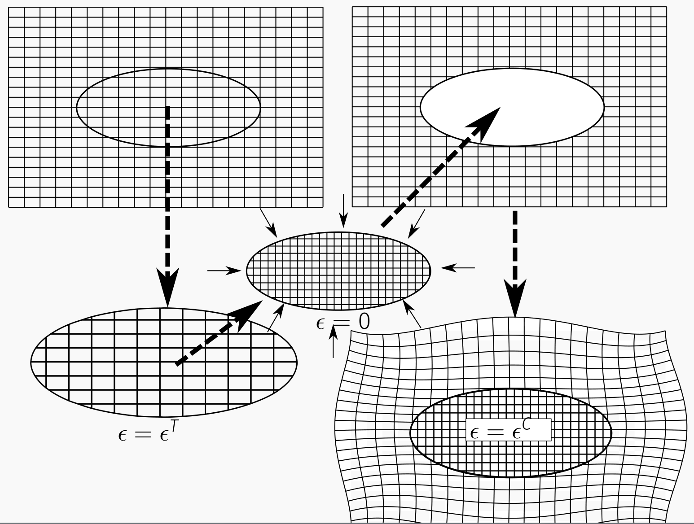
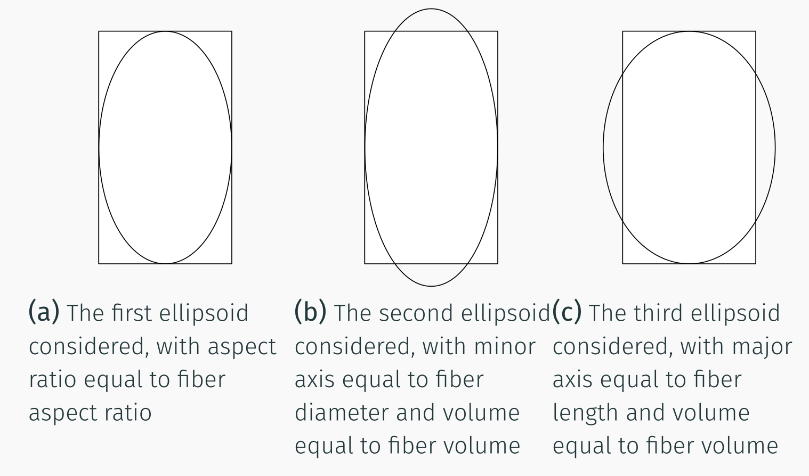
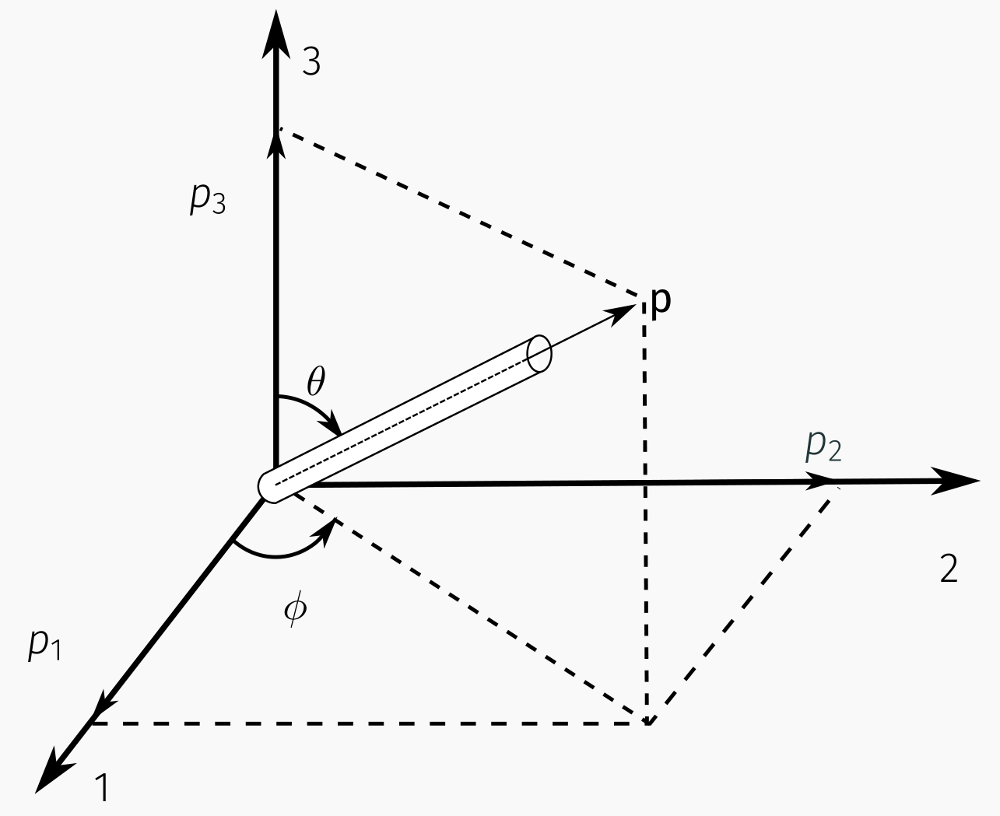
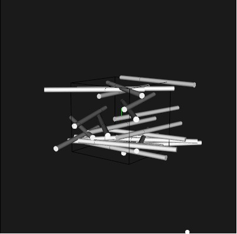
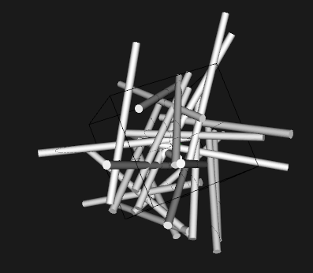
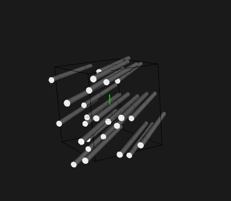

Wichita State University, Department of Aerospace Engineering
27 January 2022
schedule
27 Jan - 1D Micromechanics (HW1 Due)
1 Feb - Orientation Averaging
3 Feb - Mean-field (HW2 Due)
8 Feb - Variational Calculus
outline
eshelby
aspect ratio
eshelby’s equivalent inclusion
eshelby
Eshelby formulated the exact elastic solution for an elliptical inclusion in an infinite matrix
While this is not often useful, it serves as an exact analytical model to compare numerical results with
It is also the base for more useful mean-field theories
eshelby’s thought experiment
Eshelby solution starts with a thought experiment
Suppose we have a homogeneous, elastic body in equilibrium
We now cut an ellipsoidal pieces out of that body and allow it to undergo a stress-free transformation, such as thermal expansion
This stress-free transformation is referred to as the transformation strain, \(^T\)
eshelby’s thought experiment
Eshelby’s thought experiment
eshelby’s thought experiment
Now, we weld that expanded ellipsoid back into the original body
Tractions need to be applied to force it to fit
Once the stresses equilibrate, the ellipsoid has a constrained strain, \(^C\)
eshelby
After equilibrium is reached the inclusion is still under a state of uniform strain
The inclusion stress, \(_I\) can be found as:
\[_I = C_m (^C - ^T)\]
Where \(C_m\) is the stiffness of the material. - One of Eshelby’s critical findings is that
\[^C = S ^T\]
S is known as the Eshelby Tensor, and is a fourth-order tensor
Function of shape and poisson’s ratio
It has been calculated exactly for ellipsoids, and numerically for other shapes
eshelby tensor
\(\) represents the matrix Poisson’s ratio
s is the aspect ratio of the fibers
\(I_1 = (s{(s2-1)}{}-^{-1} s)\)
\(Q=\)
\(R=\)
\(T=\)
\(I_3 = 4-2I_1\)
eshelby tensor
\(S_{ijkl}\)
Long Fibers
Short Fibers (Ellipsoids)
\(S_{1111}=S_{2222}\)
\(\)
\(Q+RI_1+\)
\(S_{3333}\)
0
\(+RI_3+2s^2T\)
\(S_{1122} = S_{2211}\)
\(\)
\(-RI_1+\)
\(S_{1133} = S_{2233}\)
\(\)
\(-R I_1 - s^2T\)
\(S_{3311} = S_{3322}\)
0
\(-R I_3 - T\)
| \(
\) | \(\) | \(+RI_1+\) | | \(
\) | \(\) | \(2R--T\) | | all other \(S_{ijkl}\) | 0 | 0 |
inclusions
Eshelby’s initial thought experiment was for a homogeneous material
To consider a different type of inclusion, we need to relate the transformation strain between some fictitious ellipsoid of matrix material which would be equivalent to our inclusion.
We will refer to the inclusion stiffness as \(C_f\), the transformation strain in the matrix as \(^T\), and the transformation strain in the inclusion \(^{T*}\).
inclusions
We are trying to find a transformation equivalent to our inclusion, so we set
\[_I = C_m(^C - ^T) = C_f(C-{T*})\]
Now we substitute the relation \(^C = S^T\)
\[C_m(S - I)^T = C_f(S T-{T*})\]
We can solve this to find the transformation strain
\[^T = ^{-1} C_f ^{T*}\]
stiffness
Since the transformation strain is arbitrary, we can choose \(^T\) such that \(^{T*}\) is 0
Now suppose we impose some strain, \(^0\) on the composite
The stress in the inclusion will be
\[_I = C_m (^0 + ^C - ^T) = C_f (^0 + ^C)\]
Simplifying terms gives
\[( C_f - C_m ) ( ^0 + ^C ) = -C_m ^T\]
stiffness
We now assume \(^0 + ^C = {}^f\) and multiply both sides by \(S C_m^{-1}\)
\[S ( C_m ) ^{-1} ( C_f - C_m ) {}^f = -^C\]
Recall \(S^T = ^C\)
We can also write \(^C\) in terms of \({}^f\)
\[S ( C_m ) ^{-1} ( C_f - C_m ) {}^f = ^0- {}^f\]
strain concentration tensor
Finally, we can add \(I{}^f\) to both sides to find
\[[I+S ( C_m ) ^{-1} ( C_f - C_m )] {}^f = ^0\]
We define the inverse of the left-hand side the Eshelby strain-concentration tensor
\[A^E = [I+S ( C_m ) ^{-1} ( C_f - C_m )]^{-1}\]
The stiffness can be calculated as
\[C = C_m + v_i (C_f-C_m)A^E\]
stiffness
This stiffness calculation is valid for any number of inclusions
However, it is only appropriate for very dilute concentrations (<1% volume fraction)
This ensures that the assumption \(^0 + ^C = {}^f\)
aspect ratio
aspect ratio
Some studies have been done to evaluate Eshelby tensors for short fibers
Long fibers are approximated by an ellipsoid with infinitely long major axis
This is not appropriate for short fibers
We could logically consider three different ellipsoids to represent a short fiber
aspect ratio
aspect ratio comparisons
aspect ratio
Steif and Hoysan investigated the effect of aspect ratio numerically
Found that (a) and (c) were good for short fibers
As fibers get longer, and as stiffness ratio of fiber to matrix increases, (a) gives best results
is also the easiest to use (same aspect ratio), so that is what is done in Eshelby-based models
fiber orientation
With Eshelby (and derivative models), fibers at different orientations are modeled as a different inclusion
Since the Eshelby tensor, S is a fourth-order tensor, we can treat it the same way as C
Write it as 6x6 matrix, transform using \(R^\)
example
As an example, let us consider a “laminate” of short fiber composites
This is a good approximate for many 3D printed composites
We have a \(^\) laminate, with very short carbon fibers, s = 15
If we assume the volume fraction of fibers in our part is 20%
And that there are equally many fibers in 45 and -45 directions
Then \(v^{45} = v^{-45} = 0.1\)
Note: Since this is not a dilute concentration, we would not expect this to be very accurate
example
Python code for this example (with some typical values for \(C_m\) and \(C_f\)) is posted here
fiber orientation
fiber orientation
While a laminate analogy works well for some cases, in general short fibers are not aligned in laminates
It is not practical to model each possible fiber orientation as a separate inclusion
Advani-Tucker introduced a tensorial representation of fiber orientation
fiber in spherical coordinates
single fiber coordinate system
fiber direction components
Component
Definition
p1
\(\)
p2
\(\)
p3
\(\)
orientation tensor
Within a given volume, a distribution of fibers can be defined by some orientation distribution function, \((, )\).
Advani and Tucker introduced tensor representations of fiber orientation distribution functions
\[a_{ij} = p_i p_j (p) dp\]
And
\[a_{ijkl} = p_i p_j p_k p_l(p) dp\]
Note: any order tensor may be defined in this manner, the orientation distribution function must be even, due to fiber symmetry, and thus any odd-ordered tensor will be zero.
orientation tensor
It can be noted that some symmetries must exist due to the way the tensors are defined.
In the second order tensor we have
\[a_{ij} = a_{ji}\]
and in the fourth order tensor
\[a_{ijkl} = a_{jikl} = a_{kijl}\]
and so on for any permutation of i, j, k and l.
orientation tensor
The orientation tensor is also normalized such that:
\[a_{ii} = 1\]
And any lower-order tensor can be expressed in terms of the next higher-order tensor, for example
\[a_{ijkk} = a_{ij}\]
example - 2D random
A visualization of a 2D random orientation distribution. This is expressed with the second-order tensor a_11 = a_22 = 0.5, with all other a_ij = 0.
A visualization of a 2D random orientation distribution. This is expressed with the second-order tensor a11 = a22 = 0.5, with all other aij=0.
example - 3D random
A visualization of a 3D random orientation distribution. This is expressed with the second-order tensor a_11 = a_22 = a_33 = 1/3, with all other a_ij = 0.
A visualization of a 3D random orientation distribution. This is expressed with the second-order tensor a11 = a22 = a33 = 1/3, with all other aij = 0.
example - aligned 45
A visualization of a perfectly aligned, off-axis orientation distribution. This is expressed by rotating the tensor with a11 = 1 and all other aij = 0.
A visualization of a perfectly aligned, off-axis orientation distribution. This is expressed by rotating the tensor with a11 = 1 and all other aij = 0.